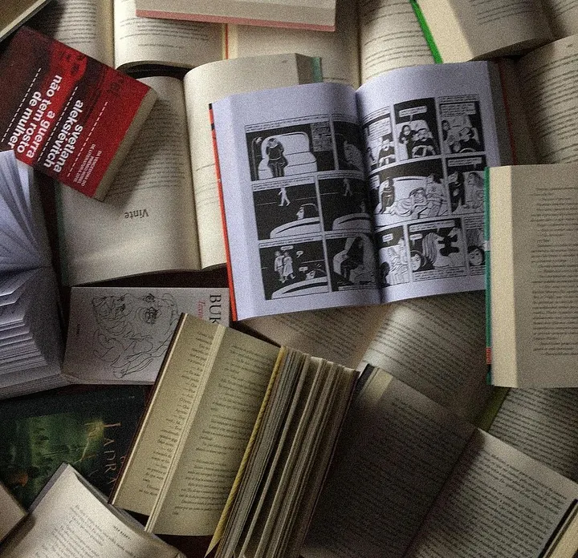
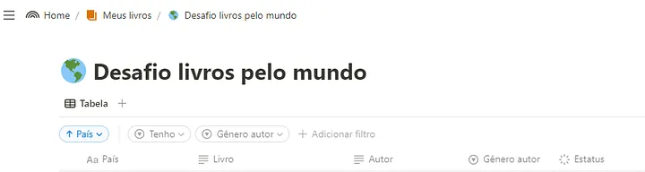

Embarquei num desafio de ler um livro por país: uma viagem literária em busca de pluralidade, novas vozes e autores de todo o mundo. Aqui começa a jornada.
Durante a pandemia reencontrei o amor pelos livros. Aquele amor que nunca deixa de existir ou que diminui, mas que acontece alguns desencontros às vezes. Apenas isso.

E nesse período também descobri o Booktube. Apesar de ser uma comunidade específica que existe a anos, apenas no início da faculdade estive realmente 100% online e assim pude desbravar as plataformas com tempo.
Com isso conheci muita gente legal, que me apresentou muitos livros legais e que também expandiram minha visão sobre a leitura. Pessoas que se importavam e focavam na pluralidade e diversidade do que liam, que incentivaram seus seguidores a fazerem o mesmo.
Isso fez muito sentido para mim e para o que eu acho importante, sobre o que deveria mudar para ampliar meus conhecimentos e para me tornar uma pessoa melhor. Sobre construir quem eu ainda quero ser.
E foi nesse momento que a minha saga de super organização das leituras e de análises iniciaram.
Por indicação de um vídeo encontrei uma planilha no Excel que era configurada para coletar diversas informações dos livros e depois apresentar em gráfico. Por indicação de um perfil no Instagram descobri como fazer um mapa pessoal no Maps e comecei a adicionar locais de livros e escritores. Depois, descobrindo como usar o Notion percebi as possibilidades de dar um upgrade nessa organização.
Isso tudo me ajudou a ter uma visão clara sobre os livros que tenho na estante e sobre o que leio. Desde então percebo minhas falhas quanto a diversidade e representatividade, faço escolhas mais conscientes e também tenho um pouquinho de orgulho pelos meus avanços.
Inicio o Desafio livros pelo mundo com grande empolgação. É mais um passo nesse processo de pluralidade no que leio e da pessoa que quero me tornar.

Meu objetivo em compartilhar publicamente é auxiliar quem também está começando nessa jornada ou quem já está adiantada e precisa de uma ajudinha com alguns países.
Essa jornada começa antes das leituras, mais precisamente na organização delas: listagem dos países, pesquisa dos livros e aquisição (online ou físico), para depois vir a ler.
A fase da procura por livros é a mais demorada e difícil, porque nem sempre temos em português e nem todo mundo tem condições para consumir em outros idiomas, seja por conta de domínio na língua ou por poder aquisitivo de importados.
Pensando nisso vou começar a compartilhar meus avanços, seja a listagem dos livros que já encontrei, dicas de lugares para quem quiser comprar e, quem sabe, sobre o que achei de cada um. Nunca tentei fazer resenhas e não sei se sou boa nisso.
Enfim, estarei linkando os blogs para auxílio sempre.
Abraço, Louise.